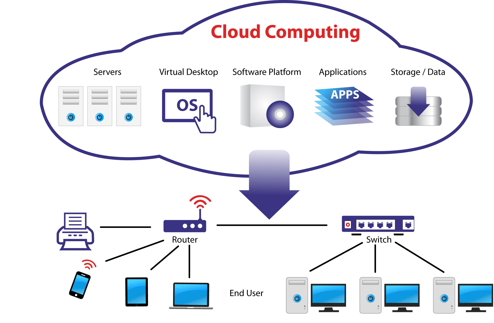
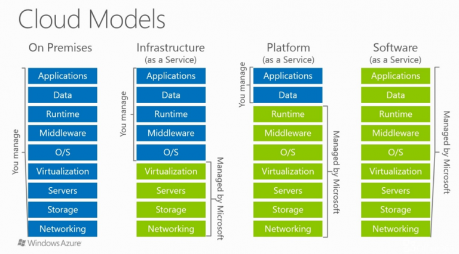

le cloud computing plus généralement est un service proposée par des entreprises ou mis en place par un particulier qui sert a accéder a des ressources informatique via le réseau, le service doit être à la demande, protégée avec des ressources partagées. le cloud se divise en trois catégories IaaS, PaaS et Saas qui influent tout les trois sur des ressources et des caractéristiques différentes. autrement dit Le cloud computing est une technologie permettant de délocaliser les données et les applications sur des infrastructures dématérialisées accessibles depuis Internet.
 reseau type en formation de cloud.
le service Iaas fournit une infrastructure informatique complête. l’entreprise qui propose ce service met a disposition un VPS ou serveur privée virtuelle muni d’une puissance de calcul (proco/ram) d’une conectivité (souvent une connexion gigabit) et un stockage (HDD/SSD) pour de ce qui est de la partie software nottament l’os et la configuration du serveurs c’est au client de configurer cela à sa guise → c’est un système libre pour l’utilisateur mais peu accessible au public non informé.
le plateforme as a service livre lui aussi un serveur virtuel privée mais la partie software, surtout au niveau de l’OS est géré par le vendeur. ainsi cette forme de cloud computing est plus accessible au public mais reste moins customisable, les taches sont limités et donc les types de Paas se multiplient en fonction du système d’exploitation (windows pour un ordi a distance / linux pour un serveur).
ici on parle moins d’un serveur privé virtuel, même si c’est toujours le cas, son utilisation est complêtement différente. en effet ce service sert a mettre en place une seul application pour la mettre directement sur le web, il n’y a ni configuration de l’os ou encore de toute application, c’est une utilisation limitée du cloud sert souvent a augmenter l’accessibilité a une application grâce au web. attention : il faut différencier le service ASP, qui fait une communication entre une application et un serveur qui est totalement différente. au niveau d’un service SaaS il n’y a aucune application mit physiquement sur le pc. il ne s’agituniquement qu’une connexion.ainsi pour le ASP on paye la liason entre le service et le serveur tandis que pour Saas on paye la consomation précise du service (puissance de calcul pour le deep learning par exemple).
image du cloud microsoft azure
autres services :
- DaaS : Desktop as a Service, qui correspond à un « Bureau virtuel hébergé » c’est-à-dire à l’externalisation d’une infrastructure de virtualisation de Bureau (VDI).
- STaaS : Storage as a Service, c’est-à-dire le stockage comme un service correspondant aux stockages en ligne de fichiers, comme par exemple Dropbox, Google Drive, SkyDrive ou encore Ubuntu One.
- NaaS : Network as a Service c’est-à-dire la fourniture de services réseaux.
- VPNaaS : VPN as a service pour les accès distants sécurisés VPN comme un service.
source: https://www.it-connect.fr/les-types-de-services-cloud/
| Ressources en libre-service : | les ressources utilisées tel que la puissance de calcul ou l’espace de stockage doivent pouvoir être adapter en fonction du besoin de chaque utilisateur, permet d’utiliser seulement le stricte nécessaire. |
| Ouverture : | accessibiltié depuis internet, et cela depuis n’importe qu’elle plateforme. cela induit donc la création d’un site internet et d’une interface web ou encore d’une aplication ASP pour gérer le serveur (connexion VNC/RDP). enfin accessibilité depuis n’importe qu’elle OS (linux/windows/IOS) |
| Mutualisation : | utilisation des ressources totales partagées entre plusieurs utilisateurs, tmême si un serveur correspond a une quantité de calcul impressionnante il faut repartir cette capacité entre plusieurs utilisateurs pour n’utiliser que le necessaire et ainsi permmetre l’utilisation par plusieurs personnes en simultané tout en gardant de la sécurité et gardée toute les informations privées entre chaques utilisateur. |
| Paiement à l’usage : | en mesurant la puissance de calcul et de stockage utilisée cela permet ainsi de donner à l’utilisateur ce dont il a besoin mais aussi de mesurer équitablement le paiement en fonction de la ressource utilisé. |
le sujet ici est de savoir pour l’entreprise si la réalisation technique n’est pas trop dure. → mettre en place un service cloud relève d’une preuve de grande stabilité de serveur mais aussi d’une infrastructure extrêment bien mise en place. de plus les applications d’accés type ASP ou web doivent suivre le service pour garder une qualité dans tout les service. → le temps de maintenance pour chaque service doit être prit en compte par l’entreprise en focntion des qualités et du nombre d’employés.
la sécurité pour le cloud est primordiale, c’est même la base, l’entreprise doit donc se munir d’un bon expert en sécurité informatique qui s’informe sur toute les nouvelles failles afin de minimiser toute crise au sein de l’entreprise et du cloud → la privacy des client est la chose la plus importante (sauf quand tu vend les information pour te faire du fric #google)
> IaaS : Nombre de serveurs X temps d’utilisation
> PaaS : Nombre d’appels/requêtes (plus difficile à analyser)
> SaaS : Nombre d’utilisateurs
1. L’amélioration de l’efficacité opérationnelle avec un déplacement des applications dans le Cloud en mode IaaS. Cette transformation peut se faire en quelques secondes, alors qu’il faut des mois pour acquérir et mettre en place de nouveaux serveurs… la réduction des coûts est donc potentiellement très importante.
2. L’augmentation de l’innovation différenciatrice à travers le développement de nouveaux services PaaS dans le Cloud, avec de l’IOT, de l’IA, etc.
3. L’optimisation de l’agilité « métier » avec l’élaboration et la mise à disposition de nouveaux services et de solutions dans les temps du marché.
 Quelle que soit l’approche, il convient également de prendre en compte la réduction des coûts, la simplicité et la transparence que le cloud peut apporter.
Quelle que soit l’approche, il convient également de prendre en compte la réduction des coûts, la simplicité et la transparence que le cloud peut apporter.
le cloud computing se base donc sur un choix du service proposé mettant a disposition une puissance de calcul et de stockage pour un prix évalué en fonction du taux utilisé. ainsi cela permet aux personnes d’accéder a une plus grande puissance plus facilement même si il y a toujours un risque au niveau de la sécurité web. le cloud est donc en soit quelque chose d'assez facile à mettre en place mais il est plus dificile d'en assurer sa aqualité, ce qui est le principale objectif pour la entreprises. c'est nottament le cas de shadow qui propose tout un pc en cloud, basé sur un système de PAAS. shadow